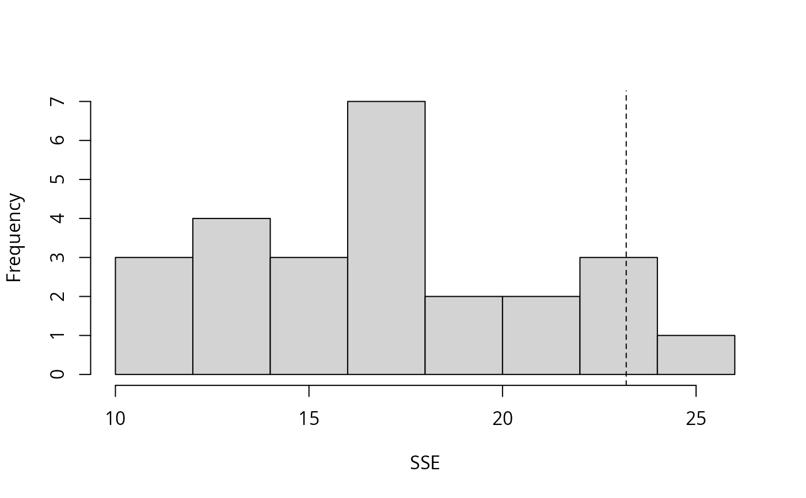

unmarked modelsparboot.RdSimulate datasets from a fitted model, refit the model, and generate a sampling distribution for a user-specified fit-statistic.
# S4 method for class 'unmarkedFit'
parboot(object, statistic = SSE, nsim = 10,
report, parallel = FALSE, ncores, ...)a fitted model inheriting class "unmarkedFit"
a function returning a vector of fit-statistics. First argument must be the fitted model. Default is sum of squared residuals.
number of bootstrap replicates
Non-functional; will be removed soon.
logical (default = TRUE) indicating whether to compute
bootstrap on multiple cores, if present. If TRUE, suppresses reporting
of bootstrapped statistics. Defaults to serial calculation when nsim < 100.
Parallel computation is likely to be slower for simple models when nsim < ~500,
but should speed up the bootstrap of more complicated models.
integer (default = one less than number of available cores) number of cores to use when bootstrapping in parallel.
Additional arguments to be passed to statistic
This function simulates datasets based upon a fitted model, refits the model, and evaluates a user-specified fit-statistic for each simulation. Comparing this sampling distribution to the observed statistic provides a means of evaluating goodness-of-fit or assessing uncertainty in a quantity of interest.
An object of class parboot with three slots:
parboot call
Numeric vector of statistics for original fitted model.
nsim by length(t0) matrix of statistics for each simulation fit.
data(linetran)
(dbreaksLine <- c(0, 5, 10, 15, 20))
#> [1] 0 5 10 15 20
lengths <- linetran$Length
ltUMF <- with(linetran, {
unmarkedFrameDS(y = cbind(dc1, dc2, dc3, dc4),
siteCovs = data.frame(Length, area, habitat), dist.breaks = dbreaksLine,
tlength = lengths*1000, survey = "line", unitsIn = "m")
})
# Fit a model
(fm <- distsamp(~area ~habitat, ltUMF))
#>
#> Call:
#> distsamp(formula = ~area ~ habitat, data = ltUMF)
#>
#> Density (log-scale):
#> Estimate SE z P(>|z|)
#> (Intercept) -0.287 0.167 -1.72 0.0852
#> habitatB 0.253 0.198 1.28 0.2000
#>
#> Detection (log-scale):
#> Estimate SE z P(>|z|)
#> (Intercept) 3.06 0.548 5.57 2.53e-08
#> area -0.13 0.096 -1.35 1.76e-01
#>
#> AIC: 165.5482
#> Number of sites: 12
#>
#> Survey design: line-transect
#> Detection function: halfnorm
#> UnitsIn: m
#> UnitsOut: ha
#>
# Function returning three fit-statistics.
fitstats <- function(fm, na.rm=TRUE) {
observed <- getY(fm@data)
expected <- fitted(fm)
resids <- residuals(fm)
sse <- sum(resids^2, na.rm=na.rm)
chisq <- sum((observed - expected)^2 / expected, na.rm=na.rm)
freeTuke <- sum((sqrt(observed) - sqrt(expected))^2, na.rm=na.rm)
out <- c(SSE=sse, Chisq=chisq, freemanTukey=freeTuke)
return(out)
}
# \donttest{
(pb <- parboot(fm, fitstats, nsim=25, report=1))
#> Warning: report argument is non-functional and will be deprecated in the next version
#>
| | 0 % ~calculating
|++ | 4 % ~00s
|++++ | 8 % ~00s
|++++++ | 12% ~00s
|++++++++ | 16% ~00s
|++++++++++ | 20% ~00s
|++++++++++++ | 24% ~00s
|++++++++++++++ | 28% ~00s
|++++++++++++++++ | 32% ~00s
|++++++++++++++++++ | 36% ~00s
|++++++++++++++++++++ | 40% ~00s
|++++++++++++++++++++++ | 44% ~00s
|++++++++++++++++++++++++ | 48% ~00s
|++++++++++++++++++++++++++ | 52% ~00s
|++++++++++++++++++++++++++++ | 56% ~00s
|++++++++++++++++++++++++++++++ | 60% ~00s
|++++++++++++++++++++++++++++++++ | 64% ~00s
|++++++++++++++++++++++++++++++++++ | 68% ~00s
|++++++++++++++++++++++++++++++++++++ | 72% ~00s
|++++++++++++++++++++++++++++++++++++++ | 76% ~00s
|++++++++++++++++++++++++++++++++++++++++ | 80% ~00s
|++++++++++++++++++++++++++++++++++++++++++ | 84% ~00s
|++++++++++++++++++++++++++++++++++++++++++++ | 88% ~00s
|++++++++++++++++++++++++++++++++++++++++++++++ | 92% ~00s
|++++++++++++++++++++++++++++++++++++++++++++++++ | 96% ~00s
|++++++++++++++++++++++++++++++++++++++++++++++++++| 100% elapsed=00s
#>
#> Call: parboot(object = fm, statistic = fitstats, nsim = 25, report = 1)
#>
#> Parametric Bootstrap Statistics:
#> t0 mean(t0 - t_B) StdDev(t0 - t_B) Pr(t_B > t0)
#> SSE 113.7 19.24 25.96 0.231
#> Chisq 53.6 8.97 9.58 0.115
#> freemanTukey 23.2 6.02 4.07 0.115
#>
#> t_B quantiles:
#> 0% 2.5% 25% 50% 75% 97.5% 100%
#> SSE 43 48 81 97 113 141 154
#> Chisq 29 29 38 47 52 60 60
#> freemanTukey 11 11 14 17 19 24 25
#>
#> t0 = Original statistic computed from data
#> t_B = Vector of bootstrap samples
#>
plot(pb, main="")

# Finite-sample inference for a derived parameter.
# Population size in sampled area
Nhat <- function(fm) {
sum(bup(ranef(fm, K=50)))
}
set.seed(345)
(pb.N <- parboot(fm, Nhat, nsim=25, report=5))
#> Warning: report argument is non-functional and will be deprecated in the next version
#>
| | 0 % ~calculating
|++ | 4 % ~00s
|++++ | 8 % ~00s
|++++++ | 12% ~00s
|++++++++ | 16% ~00s
|++++++++++ | 20% ~00s
|++++++++++++ | 24% ~00s
|++++++++++++++ | 28% ~00s
|++++++++++++++++ | 32% ~00s
|++++++++++++++++++ | 36% ~00s
|++++++++++++++++++++ | 40% ~00s
|++++++++++++++++++++++ | 44% ~00s
|++++++++++++++++++++++++ | 48% ~00s
|++++++++++++++++++++++++++ | 52% ~00s
|++++++++++++++++++++++++++++ | 56% ~00s
|++++++++++++++++++++++++++++++ | 60% ~00s
|++++++++++++++++++++++++++++++++ | 64% ~00s
|++++++++++++++++++++++++++++++++++ | 68% ~00s
|++++++++++++++++++++++++++++++++++++ | 72% ~00s
|++++++++++++++++++++++++++++++++++++++ | 76% ~00s
|++++++++++++++++++++++++++++++++++++++++ | 80% ~00s
|++++++++++++++++++++++++++++++++++++++++++ | 84% ~00s
|++++++++++++++++++++++++++++++++++++++++++++ | 88% ~00s
|++++++++++++++++++++++++++++++++++++++++++++++ | 92% ~00s
|++++++++++++++++++++++++++++++++++++++++++++++++ | 96% ~00s
|++++++++++++++++++++++++++++++++++++++++++++++++++| 100% elapsed=00s
#>
#> Call: parboot(object = fm, statistic = Nhat, nsim = 25, report = 5)
#>
#> Parametric Bootstrap Statistics:
#> t0 mean(t0 - t_B) StdDev(t0 - t_B) Pr(t_B > t0)
#> 1 162 0.701 15.9 0.462
#>
#> t_B quantiles:
#> 0% 2.5% 25% 50% 75% 97.5% 100%
#> [1,] 129 132 151 162 174 184 184
#>
#> t0 = Original statistic computed from data
#> t_B = Vector of bootstrap samples
#>
# Compare to empirical Bayes confidence intervals
colSums(confint(ranef(fm, K=50)))
#> 2.5% 97.5%
#> 117 218
# }